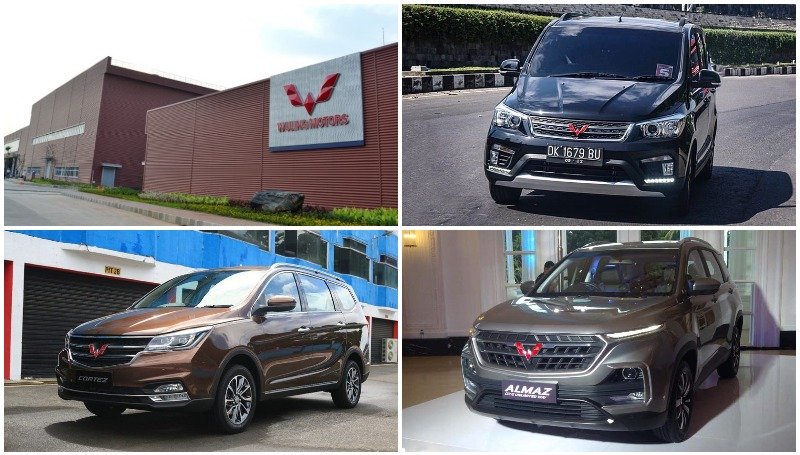
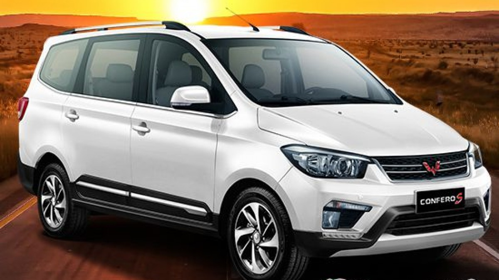
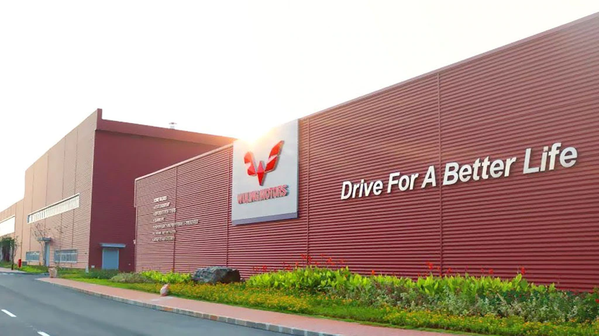

Wuling
Memulai pengembangan bisnis di segmen otomotif Indonesia tentunya bukanlah perkara mudah bagi Wuling Motors. Sejarah awal Wuling di Indonesia di mulai dengan pembangunan pabrik. Di mana Wuling Motors memang tampak serius menggarap industri otomotif, yang diwujudkan dengan pembangunan pabrik di atas lahan seluas 60 hektar
Pabrik Wuling berada di Greenland International Center (GIIC), Cikarang, Jawa Barat. Pabrik ini dibangun sejak Agustus 2015 lalu. Inilah gebrakannya yang pertama. Dalam kurun waktu kurang dari dua tahun, pabrik itu pun selesai dibangun. Untuk menandai pabrik mulai beroperasi, pada 11 Juli 2017 Wuling Motors menggelar seremonial peresmian pabrik, yang turut dihadiri Wakil Presiden Republik Indonesia, Jusuf Kalla
Pabrik Wuling Motors mampu memproduksi hingga 120.000 unit kendaraan setiap tahunnya, dan telah menciptakan 3.000 lapangan kerja untuk masyarakat di Indonesia. Menandai peresmian pabrik tersebut, Wuling Motors turut memperkenalkan mobil pertama mereka yang bermain di segmen low MPV, yaitu Wuling seri Confero. Produk ini dalam waktu singkat mampu menggebrak pasar mobil keluarga di Indonesia. Mobil ini menawarkan sejumlah keunggulan, yang dikemas dengan harga yang terjangkau.
Sejarah Wuling Motors Indonesia, Menggebrak Sejak 2015
Sejarah Wuling Motors Indonesia - PT SAIC General Motors Wuling (SGMW) Motor Indonesia atau Wuling Motors, selaku Agen Pemegang Merek (APM) Wuling, sudah 1.000 hari menapaki bisnis mereka di Tanah Air. Pencapaian pabrikan asal Tiongkok ini sudah cukup baik, khususnya dari sisi penjualan di pasar domestik maupun ekspor. Jajaran produk Wuling yang dijual di Indonesia pun ternyata cukup menarik animo masyarakat.
Terlebih masyarakat yang mendambakan sebuah produk multi purpose vehicle (MPV) dan juga sport utility vehicle (SUV) dengan fitur berlimpah, dengan harga yang terjangkau. Kini jajaran produk Wuling pun kerap kita jumpai di jalanan seluruh Indonesia. Mulai dari Wuling seri Confero, yang sudah menjadi salah satu pilihan mobil keluarga 7-penumpang dengan harga terjangkau.
Dilanjutkan Wuling Cortez yang mengisi segmen medium MPV, yang menawarkan sebuah mobil keluarga yang mewah. Fitur berlimpah, namun dari sisi harga cukup murah dikelasnya. Hingga di segmen SUV, melalui kehadiran Wuling Almaz yang dijejali dengan fitur canggih, Wuling Indonesia Command (WIND). Lalu seperti apa sebenarnya langkah awal Wuling Motors di Indonesia sejak pertama kali menapakan bisnis di Indonesia? Simak ulasan lengkapnya berikut ini:
Sejarah Wuling Motors di Indonesia
Memulai pengembangan bisnis di segmen otomotif Indonesia tentunya bukanlah perkara mudah bagi Wuling Motors. Sejarah awal Wuling di Indonesia di mulai dengan pembangunan pabrik. Di mana Wuling Motors memang tampak serius menggarap industri otomotif, yang diwujudkan dengan pembangunan pabrik di atas lahan seluas 60 hektar. Pabrik Wuling berada di Greenland International Center (GIIC), Cikarang, Jawa Barat. Pabrik ini dibangun sejak Agustus 2015 lalu. Inilah gebrakannya yang pertama.
Dalam kurun waktu kurang dari dua tahun, pabrik itu pun selesai dibangun. Untuk menandai pabrik mulai beroperasi, pada 11 Juli 2017 Wuling Motors menggelar seremonial peresmian pabrik, yang turut dihadiri Wakil Presiden Republik Indonesia, Jusuf Kalla. Pabrik Wuling Motors mampu memproduksi hingga 120.000 unit kendaraan setiap tahunnya, dan telah menciptakan 3.000 lapangan kerja untuk masyarakat di Indonesia.
Menandai peresmian pabrik tersebut, Wuling Motors turut memperkenalkan mobil pertama mereka yang bermain di segmen low MPV, yaitu Wuling seri Confero. Produk ini dalam waktu singkat mampu menggebrak pasar mobil keluarga di Indonesia. Mobil ini menawarkan sejumlah keunggulan, yang dikemas dengan harga yang terjangkau.
| Kelebihan | Kekurangan |
|---|---|
| Harga Jual Terjangkau | Image Mobil China |
| Kualitas Dapur Pacu Unggulan | Spare Part Masih Sulit Ditemui |
| Desain Eksterior Stylish & Modern | Sisi Transmisi Kurang Maksimal |
| Kabin Interior Super Luas | |
| Fitur Keselamatan Berteknologi |